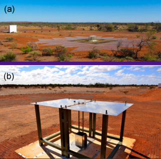
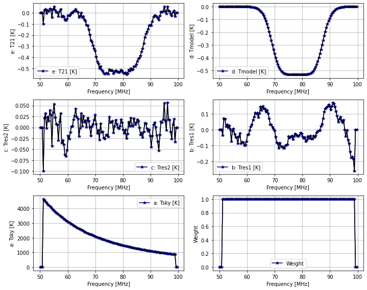
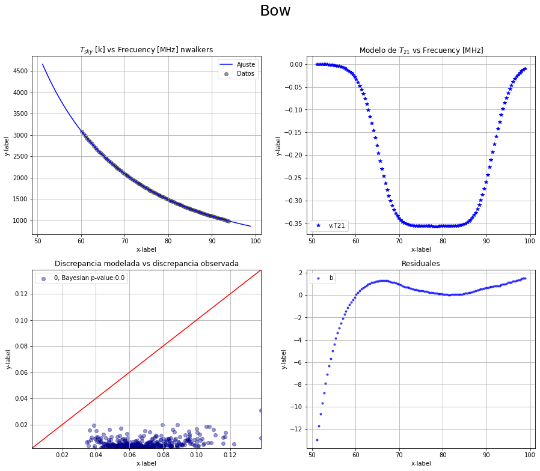

This project explores the statistical validation of the 21 cm cosmological signal model reported by the EDGES radio telescope. The research involves complex data analysis and validation techniques to confirm the authenticity and accuracy of the cosmological signal model.
This project aims to validate the physical models developed by the EDGES radio telescope collaboration, who collected data to measure the 21 cm cosmological signal produced by primordial hydrogen during the reionization era. These publicly accessible data were used to replicate the physical and statistical models reported by the collaboration, with which a model of the sky temperature signal Tsky
was developed using Bayesian statistics. The goal was to reproduce the reported detection of the 21 cm signal from primordial hydrogen.
The 21 cm line is a key observational probe of the early universe, providing insights into the epoch of reionization and the formation of the first stars and galaxies.
The validation process was carried out using the Gelman-Rubin discrepancy criterion, which was employed to verify the model's ability to reproduce synthetic data that adequately mimic the observations made by the antenna. Out of the four models analyzed in this article, it was not possible to fully validate the absorption of primordial hydrogen, as, despite statistically solid models, no physical value was obtained for the foreground temperature
Tsky
or for the temperature due to the 21 cm emission. Nevertheless, these ionospheric models may serve as a basis for future projects and simulations of the sky in radio waves.
We employed advanced statistical methods, including Bayesian inference and machine learning models, to analyze the data obtained from the EDGES radio telescope. The validation process involved cross-referencing with other cosmological observations and simulations.
The model used in this study is based on the standard cosmological model, with adjustments to account for potential anomalies in the 21 cm signal. We have developed a robust framework that incorporates various astrophysical and cosmological parameters to enhance the reliability of the model.
The data used are Frequency (ν[MHz]) vs Sky Temperature (Tsky[K]). The temperature (Tsky) is modeled as the sum of TF “Foreground Temperature” and T21 “21 cm Temperature”.
$$ T_{21} = -A \left( \frac{1 - e^{\tau} e^{B}}{1 - e^{-\tau}} \right) $$
T21 is modeled according to the following expression:
$$ B = \frac{4(v - \nu_0)^2}{w^2} \log \left( -\frac{1}{\tau} \log \left( 1 + e^{-\tau} \right) \right) $$
Where:
TEMPERATURE DUE TO 21 CM EMISSION
TF(ν) is the foreground brightness temperature due to galactic and ionospheric emission, which is modeled polynomially in log(ν/νc).
$$ T_F(\nu) = b_0 \left( \frac{\nu}{\nu_c} \right)^{\alpha + b_1 + b_2 \log(\nu/\nu_c)} e^{b_3(\nu/\nu_c)^{-2}} + T_e \left( 1 - e^{-b_3(\nu/\nu_c)^{-2}} \right) $$
Where :Foreground Temperature
Bowman makes a linear approximation of the equation assuming that b1, b2, and b3 are all ≪1, producing the following equation for the foreground temperature:
$$ T_F(\nu) = a_0 \left( \frac{\nu}{\nu_c} \right)^{-2.5} + a_1 \left( \frac{\nu}{\nu_c} \right)^{-2.5} \log \left( \frac{\nu}{\nu_c} \right) + a_2 \left( \frac{\nu}{\nu_c} \right)^{-2.5} \log^2 \left( \frac{\nu}{\nu_c} \right) + a_3 \left( \frac{\nu}{\nu_c} \right)^{-4.5} + a_4 \left( \frac{\nu}{\nu_c} \right)^{-2.0} $$
Where TF: Foreground Temperature (Bowman)
It can be seen that between the expressions T21 and TF there are a total of 9 parameters. These parameters are determined using Bayesian methods with Python libraries (Emcee and PyMC3).
$$ T_{sky}(a_0, a_1, a_2, a_3, a_4, A, \nu_0, w, \tau) = T_F(a_0, a_1, a_2, a_3, a_4) + T_{21}(A, \nu_0, w, \tau) $$
Data analysis was performed using Python and specialized libraries such as NumPy, SciPy, and Astropy. The analysis focused on noise reduction, signal extraction, and statistical validation of the results.
Profundidad de la señal 21 cm
$$A=0.72 ± 0.09 K$$
Criterio de discrepancia PP= 0.82
Modelo sólido estadísticamente Convergencia $$Rhat ≈1.002$$, las cadenas convergen totalmente Modelo PyMC3Modelo PyMC3 (1.0) priors gaussianos: Modelo generado mediante PyMC3 utilizando una distribución gaussiana en la función prior.
Modelo PyMC3 (2.0), priors gaussianos y σ variable: Modelo PyMC3 utilizando una distribución gaussiana en la función prior con un error σ uniforme.
Modelo (Bn) Emcee (3.0), priors uniformes y σ fijo: Modelo Emcee físicamente motivado con priors uniformes y σ=0.15 K.
Modelo (Bn) Emcee (4.0), priors σ uniforme: Modelo Emcee físicamente motivado con priors uniformes y σ uniforme.
For more information or to discuss this project further, please contact Juan David Guerrero.